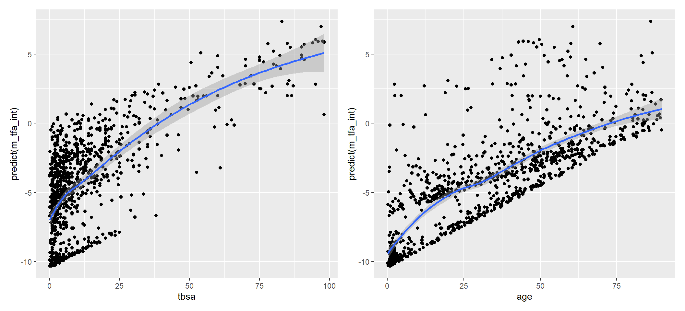
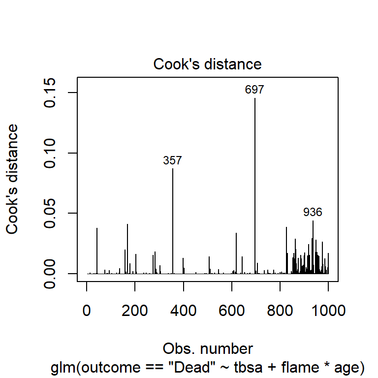

2 The logistic regression model (LRM)
The burn1000 dataset in the aplore3 package has data on 1000 cases of burns, including the hospital discharge status (Dead or Alive), demographic variables, the total burn surface area (as percentage of body surface area), and weather or not the burn involved inhalation injury or flames (see ?burn1000). After loading the required packages, we rename the outcome variable, save the result as d, and get a summary of selected variables:
library(tidyverse)
library(aplore3)
d <- burn1000 %>%
rename(outcome = death)
select(d, -id, -facility, - race) %>% summary() outcome age gender tbsa inh_inj flame
Alive:850 Min. : 0.10 Female:295 Min. : 0.10 No :878 No :471
Dead :150 1st Qu.:10.85 Male :705 1st Qu.: 2.50 Yes:122 Yes:529
Median :31.95 Median : 6.00
Mean :33.29 Mean :13.54
3rd Qu.:51.23 3rd Qu.:16.00
Max. :89.70 Max. :98.00 The previous output shows that most patients survived, age ranged from less than one to almost 90 years and males predominate; relatively few burns involved inhalation injury but almost half of them involve flame; and the total burn surface area varied widely, ranging from less than 1% to 98%.
Suppose we want to predict the outcome “Dead” from the total burn surface area. We could do it by coding the outcome as an indicator (0 for “Alive”, 1 for “Death”) and fitting a straight line (GLM), as done in figure 2.1 (left). The outcome can take values 0 or 1 only, but we could interpret the predictions of the linear model for any given tbsa as outcome probabilities. However, for extreme values of tbsa like 1% or 90%, the linear model predicts a value out of the allowed range for a probability: less than 0 for values of tbsa close to 0, and more than 1 for values of tbsa close to 1. Clearly, the linear model in not appropriate.
Figure 2.1: Linear and logistic functions to model the probability of death from the total body surface area
To circumvent the problem of getting predicted probabilities out of the allowed 0 to 1 range, we should use an asymptotic function that never crosses the 0 and 1 boundaries for a probability. One such function is the logistic function shown in figure 2.1 (right). This function is:
\[\pi = \frac{e^{\beta_0 + \beta_1 X}}{1 \enspace + \enspace e^{\beta_0 + \beta_1 X}}\]
where \(\pi\) denotes the probability of observing the event of interest. Note that the event of interest is one of the levels of a binary variable, (such as outcome = "Death"). Then, a more explicit notation for this probability would be \(\pi(Death)\), but for the sake of simplicity and the clarity of formulas, we use simply \(\pi\).
The logistic function can be used as well with more than one explanatory, variable. A logistic function with \(p>1\) explanatory variables is:
\[\begin{equation} \pi = \frac{e^{\beta_0 + \beta_1 X + \beta_2 X + ... + \beta_p}}{1 \enspace + \enspace e^{\beta_0 + \beta_1 X + \beta_2 X + ... + \beta_p}} \tag{2.1} \end{equation}\]
2.1 Logit transformation
The logistic function in (2.1) is a quite complex function of the explanatory variables \(X_1, X_2,..., X_p\). Fortunately, it can become much simpler in terms of a transformation of \(\pi\) called logit or log odds, which is the natural logarithm of the odds of death. It can be proved that equation (2.1) is equivalent to:
\[\begin{equation} ln(\frac{\pi}{1-\pi}) = \beta_0 + \beta_1 X_1 + \beta_2 X_2 + ... \beta_p X_p \tag{2.2} \end {equation}\]
The left hand side of equation (2.2) is called the logit of \(\pi\), or the log-odds of \(\pi\), it is linearly related to the explanatory variables, and that is why the right hand side of the equation is sometimes called the linear predictor.
The LRM assumes that the relation between a probability \(\pi\) and a linear predictor of explanatory variables \(X\) is described by the logistic function of equation (2.1); or equivalently, it assumes that the logit of this probability is described by the linear function of one or more explanatory variables of equation (2.2). Explanatory variables can be either quantitative or categorical, but categorical variables with \(k\) levels are entered as \(k-1\) binary indicators, just as in GLMs.
The LRM also assumes that the binary outcome has a Bernouilli distribution of parameter \(\pi\), and this implies that in any set of \(n\) observations having the same values of the explanatory variables, the number of cases with the event of interest follow a binomial distribution of parameters \(\pi\) and \(n\).
The coefficients of a LRM are estimated by a method called maximum likelihood (ML). This method looks for the values of the coefficients that would make the probability of the observed data as high as possible. The estimates obtained with this method are called ML estimates. ML works well in large samples, but not so well in small samples. In the case of LRMs, a rule of thumb to determine if a sample is large enough to get reliable ML estimates is to verify that we have 10 to 20 events and non-events per model coefficient. In the case of the burns dataset, we have 150 events (deaths) and 850 non-events (alive). This means that we could reliably fit models with 150/20 = 7 coefficients at most, to be on the safe side.
2.2 Fitting a LRM
Suppose we want to fit a LRM to express the probability of death as a function of tbsa and flame. This can be done with function glm(), as done below. Two things should be noted:
Because we want to model the probability of “Dead”, and this is a level of the
outcomevariable, the left hand side of the formula passed as first argument toglm()isoutcome == "Dead"2The second argument
family = binomialis needed if we want to fit a LRM. Functionglm()owes its name to the fact that it can be used to fit any type of gerneralized linear model, and LRM is just one of these types. Thefamilyargument indicates theglm()function which type of generalized lineal model we want to fit.
The remaining arguments to this function are similar as those for the lm() functions we used in the previous chapter to fit GLMs.
After fitting the model, we can print the estimated coefficients with coef():
m_tf <- glm(outcome == "Dead" ~ tbsa + flame, family = binomial, data = d)
coef(m_tf) (Intercept) tbsa flameYes
-4.10581359 0.07811869 1.26715789 What the output shows is the estimates of the coefficients in the linear predictor. Thus, the estimated model is (rounding the coefficients to the fourth decimal):
\(ln(\frac{\pi}{1-\pi})\) = -3.3451 + 0.0854 tbsa
2.3 Interpretation of model coefficients
The linear predictor of a LRM allows to compute the log odds of \(\pi\), according to equation (2.2). If all \(X\) variables were equal to 0 in this equation, the resulting log odds would be \(\beta_0\). Consequently, the intercept \(\beta_0\) can be interpreted as the value of the log odds when all \(X\) variables 0. This will be of no particular interest if the value 0 is impossible for some \(X\) variable(s), which is the case in our example: tbsa = 0 cannot happen, since it would imply no burn at all. Therefore the intercept in this model has no useful interpretation.
The remaining coefficients of equation (2.2) (\(\beta_1, \beta_2, ..., \beta_p\)) quantify the change that would result in the log-odds for a unit increment in the corresponding \(X\) variable, while keeping constant all other \(X\) variables. To se this, let’s compare the log odds that will result when \(X_1\) takes the value \(k\), and when it takes the value \(k+1\):
\(X_1 = k: \qquad \qquad ln \left( \frac{\pi|X_1 = k}{1-\pi|X_1 = k} \right) = \beta_0 + \beta_1 k + \beta_2 X_2 + ... + \beta_p X_p\)
\(X_1 = k+1: \qquad ln \left( \frac{\pi|X_1 = k+1}{1-\pi|X_1 = k+1} \right) = \beta_0 + \beta_1 (k+1) + \beta_2 X_2 + ... + \beta_p X_p\)
\(\qquad \qquad \qquad \qquad \qquad \qquad \qquad \quad = \beta_0 + \beta_1 k + \beta_1 + \beta_2 X_2 + ... + \beta_p X_p\),
where \(\pi|X_1 = k\) is the probability of the outcome, given \(X_1 = k\).
Comparing these two results, we see they only differ by \(\beta_1\). Therefore \(\beta_1\) can be written as the difference between the two log odds, and because a difference of logarithms is the logarithm of a ratio, we get:
\[\beta1 \quad = \quad ln \left( \frac{\pi|X_1 = k+1}{1-\pi|X_1 = k+1} \right) - ln \left( \frac{\pi|X_1 = k}{1-\pi|X_1 = k} \right) \quad = \quad ln \left( \frac{\frac{\pi|X_1 = k+1}{1-\pi|X_1 = k+1}}{\frac{\pi|X_1 = k}{1-\pi|X_1 = k}} \right)\]
Note that the last term of the previous equation is the logarithm of an odds ratio (OR) that compares the odds of the outcome event if \(X_1 = k+1\) (top) vs \(X_1 = k\) (bottom). So, this is the logarithm of the OR corresponding to a unit increase in variable \(X_1\). Therefore, the exponential of \(\beta_1\) is the OR corresponding to such an increment in \(X_1\):
\[\begin{equation} e^{\beta1} \quad = \quad \frac{\frac{\pi|X_1 = k+1}{1-\pi|X_1 = k+1}}{\frac{\pi|X_1 = k}{1-\pi|X_1 = k}} \tag{2.3} \end{equation}\]
Here we exponentiate the coefficients of model m_tf fitted in the previous section, using the exp() function:
exp(coef(m_tf))(Intercept) tbsa flameYes
0.01647661 1.08125099 3.55074659 The exponential of the intercept is the log odds when tbsa is zero, but as commented above this has no particular interest (since tbsa > 0, by definition).
The exponential of the coefficient for tbsa is the OR corresponding a unit increase in tbsa. This implies that the odds of death increases by a factor of 1.0813 (rounded to 4 decimals) for each 1% increment in tbsa. If we want to compute the OR for an increment other than 1, we just need to raise the OR we got to the desired number of units. For instance, the OR corresponding to a 10% increment in tbsa is:
exp(coef(m_tf))[2]^10 tbsa
2.184063 Rounding this result to the second decimal, we may say that the odds of death increases by a factor of 2.18 for each 10% increment in tbsa.
Similarly, the OR corresponding to a 20% increment in tbsa is:
exp(coef(m_tf))[2]^20 tbsa
4.770132 which implies that the odds of death increases by a factor of 4.77 for each 20% increment in tbsa.
2.4 Inference on the model coefficients
The equation we obtained in section 2.2 was fitted from sample data and is therefore an estimate of the population equation (i.e., the equations we would get if we could fit the model to the whole population, not just to a finite sample). We can compute 95% CIs for the model coefficients to see what are likely values of these coefficients in the population; we can also produce Wald tests to assess the null hypothesis that a specific coefficient is zero in the population. In both cases, the functions we need to use are the same as those we used for a GLM.
2.4.1 Confidence intervals (CI) for the model coefficients
Confidence intervals for the coefficients of a LRM can be obtained with function confint():
confint(m_tf) 2.5 % 97.5 %
(Intercept) -4.69616358 -3.5907614
tbsa 0.06518979 0.0923746
flameYes 0.71873320 1.8604831The output shows the limits of the 95% CI for all model parameters. For instance, the 95% CI for the effect of tbsa is 0.0652 to 0.0924 (rounded to four decimals). However, this is a 95% CI for the effect of tbsa on the logit scale (equation (2.2)). To obtain a 95% CI for the OR of tbsa we need to exponentiate this result, just as we did in section 2.3 to get the point estimate of the OR:
exp(confint(m_tf)) 2.5 % 97.5 %
(Intercept) 0.009130237 0.02757732
tbsa 1.067361577 1.09677560
flameYes 2.051832300 6.42684078From the output we can say that the 95% CI for the OR of tbsa ranges from 1.07 to 1.1 (rounded to the second decimal).
You may find practical the following code to merge the point estimates and their correponding CI’s for the exponentiated model coefficients. We first use rbind() to merge point estimates and CI’s, and then round to the desired number of decimals:
res <- cbind(Estimate = exp(coef(m_tf)), exp(confint(m_tf))) %>% round(2)
res Estimate 2.5 % 97.5 %
(Intercept) 0.02 0.01 0.03
tbsa 1.08 1.07 1.10
flameYes 3.55 2.05 6.43If we want to compute the OR for a different increment in tbsa, say 10 years, then we need to raise the results to the power of 10. Here we do it by subsetting the second row of res, then raise it to 10, and finally round to two decimals:
res[2,]^10 %>% round(2) Estimate 2.5 % 97.5 %
2.16 1.97 2.59 Thus, the OR for a 10 year increase in tbsa is 2.16 [95% CI: 1.97, 2.59].
2.4.2 Tests on the model coefficients
Wald test on the model coefficients are produced with function summary():
summary(m_tf)
Call:
glm(formula = outcome == "Dead" ~ tbsa + flame, family = binomial,
data = d)
Deviance Residuals:
Min 1Q Median 3Q Max
-2.6751 -0.4115 -0.2559 -0.1916 2.8444
Coefficients:
Estimate Std. Error z value Pr(>|z|)
(Intercept) -4.105814 0.280726 -14.626 < 2e-16 ***
tbsa 0.078119 0.006928 11.276 < 2e-16 ***
flameYes 1.267158 0.289756 4.373 1.22e-05 ***
---
Signif. codes: 0 '***' 0.001 '**' 0.01 '*' 0.05 '.' 0.1 ' ' 1
(Dispersion parameter for binomial family taken to be 1)
Null deviance: 845.42 on 999 degrees of freedom
Residual deviance: 516.68 on 997 degrees of freedom
AIC: 522.68
Number of Fisher Scoring iterations: 6The Coefficients part of the output shows the estimates of the model coefficients and the result of the Wald test for each coefficient. These asses the null hypothesis that the corresponding coefficient in the population is equal to zero (and therefore the OR = 1, since \(e \ ^ 0 = 1\)). Consequently, low p values allow to reject the null hypothesis and conclude the corresponding coefficient in the population is not equal zero (and therefore the OR is not equal to 1). In this case, the Wald tests for the coefficients of tbsa and flameYes give a very low p-value, providing evidence that they are both related to the outcome (since the corresponding ORs are not equal to 1).
The output of summary() also provides information on the Deviance Residuals (top of the output), Null and Residual Deviance, and AIC. (bottom). The meaning of these is explained in the next section.
2.5 Assessment of fit
2.5.1 Deviance, likelihood ratio test and AIC
The deviance is a measure used to asses the fit of models estimated using maximum likelihood. However, unlike \(R^2\) in GLMs, the deviance is not a measure of goodness of fit, but rather it is a measure of lack of fit: the higher the deviance, the worse the fit; and the lower the deviance, the better the fit.
The summary of model m_tf we got in the previous section showed two deviance values:
Null deviance: the deviance of the so called null model, a model including only the intercept term, and therefore predicting the outcome as a constant. This was 845.42 on 999 degrees of freedom. The degrees of freedom is the difference between the samples size and the number of parameters estimated in a model. Because the sample size is 1000 and the null model has only one parameter (intercept), the degrees of freedom for the null model are 1000 - 1 = 999.Residual deviance: the deviance of modelm_tfincludigtbsa. This was 516.68 on 997 degrees of freedom (1000 - 3 estimated parameters).
By including tbsa and flame as predictors, the deviance was reduced from 845.42 on 999 degrees of freedom (null model) to 516.68 on 997 degrees of freedom (current model). The change in degrees of freedom reflects the fact that we added two parameters to the null model: the coefficients for tbsa and flameYes; and this resulted in a very important reduction of the deviance, implying a much better fit.
We can judge the significance of the reduction in the deviance of model m_tf using the anova() function with the argument test = "LRT" (for a Likelihood Ratio Test):
anova(m_tf, test = "LRT")Analysis of Deviance Table
Model: binomial, link: logit
Response: outcome == "Dead"
Terms added sequentially (first to last)
Df Deviance Resid. Df Resid. Dev Pr(>Chi)
NULL 999 845.42
tbsa 1 306.763 998 538.65 < 2.2e-16 ***
flame 1 21.978 997 516.68 2.758e-06 ***
---
Signif. codes: 0 '***' 0.001 '**' 0.01 '*' 0.05 '.' 0.1 ' ' 1The output shows how the residual deviance changes as we add parameters to the null model. The residual deviance for the null model is 845.42 on 999 degrees of freedom (first row). By adding one coefficient for tbsa (second row), the residual deviance drops to 538.65, which is a drop of 845.42 - 538.65 = 306.77, and this deviance reduction is statistically significant according to the Likelihood Ratio Test (LRT) (Pr(>Chi)), which means a significant improvement in fit. By adding one addition coefficient for flame (third row), the residual deviance drops to 516.68, for a change of 21.98), which again is a significant improvement in the fit. The residual deviance for the null model and model m_tf (last row of the output) are exactly the same values we saw at the bottom of the results provided by summary(m_tf), but here we can see that model m_tf significantly improves the fit compared to the null model, according to the LRT.
Last, the AIC value appearing at the end of the summary() output, is a measure called Akaike information criterion (AIC). This is the deviance penalized for model complexity. In fact it is computed by adding twice the number of parameters to the deviance. Therefore, as it is the case with the deviance, the lower the AIC, the better the fit.
The Deviance residuals at the top of the summary() output shows a brief descriptive analysis of such residuals. Deviance residuals are scaled components of the deviance, so that they provide a measure of how each observation contributes to the deviance. When a model is correct, deviance residuals follow a standard normal distribution, and therefore we expect them to have absolute values below 3. In the case of model m_tf, all deviance residuals are lower than 3 in abolute value.
2.5.2 Hosmer-Lemeshow test
A quite popular way to assess the goodness of fit (GOF) of a LRM is the Hosmer-Lemeshow GOF test. In this test, observations are grouped according to the deciles of the predicted values, and expected frequencies are computed in a contingency table defined by the decile group and the observed outcome: the model probabilities are summed for cases with the event, and the complementary of model probabilities are sumed for cases without the event). Then, a goodness of fit chi-square test is used to compare expected and observed counts in this contingency table. Therefore, a low p value in this test is evidence of a bad fit.
Package ResourceSelection has a function hoslem.test() implementing the Hosmer-Lemeshow GOF test. The first argument to this function is the vector of observed outcomes coded as an event indicator (0 for no event, 1 for event), or a logical vector (with TRUE for events and FALSE for non-events). The second argument is the vector of model probabilities obtaned with predict().
library(ResourceSelection)
hoslem.test(d$outcome == "Dead", predict(m_tf, type="response"))
Hosmer and Lemeshow goodness of fit (GOF) test
data: d$outcome == "Dead", predict(m_tf, type = "response")
X-squared = 7.9975, df = 8, p-value = 0.4337In this case, the p value from the test does not reject the null hypothesis that model m_tf is correct at the usual 0.05 \(\alpha\)-level.
2.5.3 Other measures of fit
Goodness of fit measures in the vein of \(R^2\) for GLMs are also available for LRMs. One such measure is the McFadden’s \(pseudo-R^2\), but these exceed the ambitions of this book (for the interested reader, a link to a blog post on this measure is provided in the resources section at the end of this chapter).
2.6 Model predictions and classification
Logistic regression analyses are often is done for predictive purposes. This is the case of prognostic models, such as the burns example: it would be interesting to predict the outcome when a patient with burns is admitted to the hospital. In this cases, a more focused way to assess the utility of a LRM is by looking at how well the model classifies the observations. Let’s see how.
2.6.1 Predictions and confusion matrix
First we need to compute the model predictions with predict(). However, by default, predict() wil provide log-odds (probabilities in the logit scale). If we want to get the probabilities themselves, we need to use the argument type = “response”:
predicted_prob <- predict(`m_tf`, type = "response")
predicted_prob %>% head() 1 2 3 4 5 6
0.29686890 0.02377125 0.01889882 0.01889882 0.08549355 0.02767979 Then we need to use this probabilities to guess if a case has presented, or not present, the outcome. A reasonable decision is to assume the outcome is present if the probability is higher than 0.5. So, we can compute this guess with an ifelse() statement. Last, we crosstabulate the guess with the actual value of the outcome variable outcome:
guess <- ifelse(predicted_prob > 0.5, "Dead", "Alive")
table(guess, d$outcome)
guess Alive Dead
Alive 837 79
Dead 13 71This cross tabulation of cases according to their actual value of the outcome variable and the model-based prediction is sometimes called a confusion matrix. Different measures can be derived from the confusion matrix, such as:
Classification accuracy, which is the proportion of correct predictions: (837 + 71) / 1000 = 0.908 or 90.8%.
Sensitivity, which the proportion of deaths that are correctly classified: 71 / (71 + 79) = 0.473 or 47.4%.
Specificity, which the proportion of survivors that are correctly classified: 837 / (837 + 13) = 0.985 or 98.5%.
Youden index = sensitivity + specificity - 1; 0.908 + 0.473 - 1 = 0.381.
Sensitivity and specificity are the main measures of the accuracy of a diagnostic or prognostic marker. The higher they are, the better the marker will be able to discriminate the two states it is supposed to distinguish. However, a problem with them is that the confusion matrix from which they are computed depends on the cutpoint used to dichotomize the probabilities predicted by the model.
Figure 2.2 shows the distributions of predicted probabilities by outcome, and the threshold used on these probabilities to guess the outcome (dashed line). The confusion matrix is nothing but counting how many cases there are on each side of the dashed line, for both outcomes (Alive or Death).
gf_jitter(predicted_prob ~ outcome, data = d, alpha = 0.3,
color = ~fct_rev(outcome), show.legend = FALSE) %>%
gf_hline(yintercept=0.5, linetype = 2) + coord_flip()Figure 2.2: Model 1 predicted probabilities by outcome
Although the 0.5 threshold we chose to guess the outcome may look reasonable, it is anyway arbitrary. The problem is then, how would the sensitivity and specificity change if we chose a different threshold? The solution to this question in the next section.
2.6.2 ROC curves and AUC
Receiver operating characteristic (ROC) curves are a common way to asses the accuracy of a diagnostic or prognostic method that produces a quantitative result. A ROC curve is a graphical representation of the sensitivity and specificity values we get by changing the threshold to guess a death.
Package pROC allows to plot ROC curves. The roc() function in this package computes a roc object, that can be plotted with the base R function plot(). We have used the optional argument print.thres to mark the “best” threshold, that is, the one that maximizes the Youden index (the sum of sensitivity and specificity minus one):
library(pROC)
m_tf_roc <- roc(d$outcome ~ predicted_prob)
plot(m_tf_roc, print.thres = "best")
Figure 2.3: ROC curve for model m_tf
Figure 2.3 shows the ROC curve for the probabilities computed from model m_tf. This was built by computing the sensitivity and the complementary of specificity (1-specificity) resulting from each possible threshold; each threshold contributes a point to the ROC curve, which results from joining the points. The point marked in the ROC curve is the one that maximizes the Youden index (and therefore the sum of senitivity and specificity), and corresponds to the threshold 0.158, which results in a specificity of 0.879 and a sensitivity is 0.773. We can easily verify this by computing the confusion matrix for this threshold:
guess <- ifelse(predicted_prob >= 0.158, "Dead", "Alive")
table(guess, d$outcome)
guess Alive Dead
Alive 747 34
Dead 103 116From this confusion matrix, the specificity is 747 / (747+103) = 0.879, and the sensitivity is 116 / (116 + 34) = 0.773.
In general, a ROC curve closely approaching the upper left corner (which corresponds to a sensitivity and specificity of 1) reflects a good discrimination ability. Conversely, a ROC curve very close to the diagonal indicates very poor discrimination ability. The area under the curve (AUC) is a measure frequently used to characterize the discrimination ability of a marker, since it will be high when a curves approaches the upper left corner, and low when it is close to the diagonal. AUC values can range from 0 to 1, and the higher its value the better the discrimination ability of a marker.
The AUC of the ROC curve of figure 2.3 can be easily computed with function auc() on the roc object m_tf_roc:
auc(m_tf_roc)Area under the curve: 0.8877A 95% CI for the AUC can be obtained with function ci.auc():
ci.auc(m_tf_roc)95% CI: 0.8552-0.9202 (DeLong)In this case, the “marker” is the probability computed from model m_tf, and an AUC value of 0.8877 is quite high. This indicates that model m_tf has a reasonably good prognostic ability.
2.7 Comparing models
Competing models can be compared according to how good is the fit, or according to their discrimination ability.
Let’s fit a second LRM including age as an additional predictor and get the summary:
m_tfa <- glm(outcome == "Dead" ~ tbsa + flame + age, family = binomial, data = d)
summary(m_tfa)
Call:
glm(formula = outcome == "Dead" ~ tbsa + flame + age, family = binomial,
data = d)
Deviance Residuals:
Min 1Q Median 3Q Max
-2.86594 -0.27452 -0.10350 -0.03659 2.79049
Coefficients:
Estimate Std. Error z value Pr(>|z|)
(Intercept) -7.891840 0.620523 -12.718 <2e-16 ***
tbsa 0.096450 0.008719 11.062 <2e-16 ***
flameYes 0.744372 0.336474 2.212 0.0269 *
age 0.077424 0.007911 9.787 <2e-16 ***
---
Signif. codes: 0 '***' 0.001 '**' 0.01 '*' 0.05 '.' 0.1 ' ' 1
(Dispersion parameter for binomial family taken to be 1)
Null deviance: 845.42 on 999 degrees of freedom
Residual deviance: 357.79 on 996 degrees of freedom
AIC: 365.79
Number of Fisher Scoring iterations: 7The result of the Wald test for age suggests it is related to the outcome. But let’s see if the inclusion of age in the model results in a better fit, according to the LRT:
anova(m_tf, m_tfa, test = "LRT")Analysis of Deviance Table
Model 1: outcome == "Dead" ~ tbsa + flame
Model 2: outcome == "Dead" ~ tbsa + flame + age
Resid. Df Resid. Dev Df Deviance Pr(>Chi)
1 997 516.68
2 996 357.79 1 158.89 < 2.2e-16 ***
---
Signif. codes: 0 '***' 0.001 '**' 0.01 '*' 0.05 '.' 0.1 ' ' 1We see that by adding a coefficient for age the deviance has dropped by 158.89, wich on a single degree of freedom is highly significant. Therefore, adding age to the model results in a significant improvement in the fit.
To see if the improvement in the fit is worth the greater complexity of the model, we can compare the AIC of both models with function AIC():
AIC(m_tf, m_tfa) df AIC
m_tf 3 522.6766
m_tfa 4 365.7903Because the AIC is much lower for model m_tfa, this model is preferable.
Now let’s look at the discrimination ability of both models, by plotting their ROC curves. We need to compute the roc object for this model, and then plot it along with the roc object computed previously for model m_tf. Note the argument add = TRUE in the second call to plot(), to overlay this curve to the previous one (instead of producing a different graphic):
m_tfa_roc <- roc(d$outcome ~ predict(`m_tfa`, type = "response") )
plot(m_tf_roc, col = "steelblue")
plot(m_tfa_roc, col = "darkred", add = TRUE)
Figure 2.4: ROC curve for models m_tf (blue) and m_tfa (red)
Looking at the figure, it is clear that model m_tfa has a better discrimination ability than model m_tf. Let`s compute the AUCs for these models:
auc(m_tf_roc)Area under the curve: 0.8877auc(m_tfa_roc)Area under the curve: 0.9581We see that model m_tfa has a higher AUC than model m_tf. Now, we could test for the significance of the difference in AUCs with function roc.test(), passing it as arguments the two roc objects to be compared :
roc.test(m_tf_roc, m_tfa_roc)
DeLong's test for two correlated ROC curves
data: m_tf_roc and m_tfa_roc
Z = -4.8281, p-value = 1.379e-06
alternative hypothesis: true difference in AUC is not equal to 0
95 percent confidence interval:
-0.09901206 -0.04183500
sample estimates:
AUC of roc1 AUC of roc2
0.8877176 0.9581412 The output shows a very low p value, which provides evidence of a statistically significant difference in AUC. Therefore, we can conclude that model m_tfa has a better discrimination ability than model m_tf. The output also shows the 95% CI for the difference in AUC. Therefore, from this output we can conclude that the AUC of model m_tfa is 0.042 to 0.099 higher than that of model m_tf.
The previous test (known as DeLong’s test) assumes a normal distribution of the marker in both outcome groups. If the assumption is not reasonable, a bootstrapped test can be produced with argument method = "bootstrap" (see ?roc.test). In this case this would be more appropriate since the distribution of the model predicted probabilities is quite assymetric (see figure 2.2), but the result is similar (result not shown) due to the robustness of DeLong’s test when the sample size is as high as it is in this case.
In summary, model m_tfa is superior to model m_tf in terms of both fitting the data and discriminating the two possible outcomes (dead or alive).
2.8 Confounding
LRM can be used to assess confounding, and to get ORs adjusted for confounders. Let’s fit a univariate LRM to asses the effect of inhalation injury on the outcome, and get the exponentials of the model coefficients:
m_i <- glm(outcome == "Dead" ~ inh_inj, family = binomial, data = d)
exp(coef(m_i))(Intercept) inh_injYes
0.09750 14.76923 From the output we see that the OR for inh_injYes is 14.77, implying that the odds of dead is more than fourteen times higher when there is inhalation injury than when there is not. However, inh_inj and tbsa are highly related, as can be seen in figure 2.5:
gf_boxplot(tbsa ~ inh_inj, data = d) + coord_flip()
Figure 2.5: Boxplot of tbsa by inh_inj
This may suppose that, when we look at the association of inh_inj and the outcome without taking tbsa into account, the effect of tbsa and that of inh_inj are confounded. To see if this is the case, let’s fit a model with both tbsa and inh_inj, and estimate the OR from this model:
m_ti <- glm(outcome == "Dead" ~ tbsa + inh_inj, family = binomial, data = d)
exp(coef(m_ti))(Intercept) tbsa inh_injYes
0.03406189 1.07563276 3.63233807 Acording to this model, the OR for the inhalation injury is 3.63. This OR is adjusted for tbsa, and is much lower than 14.77. So, this is a case where tbsa acted as a confounder when we estimated the effect of inhalation injuries in the univariate LRM. The term adjusted OR, which is quite common in the medical research literature, means that the OR has been estimated from models that include potential confounders.
2.9 Interaction (effect modification)
We could think that the effect of flames ca be different depending on the age of patients. To test this, we can fit a model with an additional term representing the interaction of flame and age. In function glm(), interaction terms are specified just a in function lm() for GLMs. Here we use the asterisk to specify an interaction between flame and age:
m_tfa_int <- glm(outcome == "Dead" ~ tbsa + flame * age, family = binomial, data = d)Let`s get a summary of this model:
summary(m_tfa_int)
Call:
glm(formula = outcome == "Dead" ~ tbsa + flame * age, family = binomial,
data = d)
Deviance Residuals:
Min 1Q Median 3Q Max
-2.84247 -0.27258 -0.09219 -0.01056 2.85182
Coefficients:
Estimate Std. Error z value Pr(>|z|)
(Intercept) -10.482093 1.273295 -8.232 < 2e-16 ***
tbsa 0.098108 0.008993 10.909 < 2e-16 ***
flameYes 3.816893 1.234002 3.093 0.00198 **
age 0.118519 0.018188 6.516 7.21e-11 ***
flameYes:age -0.050326 0.018760 -2.683 0.00731 **
---
Signif. codes: 0 '***' 0.001 '**' 0.01 '*' 0.05 '.' 0.1 ' ' 1
(Dispersion parameter for binomial family taken to be 1)
Null deviance: 845.42 on 999 degrees of freedom
Residual deviance: 349.76 on 995 degrees of freedom
AIC: 359.76
Number of Fisher Scoring iterations: 8
The result of the Wald test for the interaction term flameYes:age provides some evidence of an interaction between flames and age (p = 0.007). Another (possibly better) way to judge the existence of an interaction is to compare the fits of this model and the model without the interaction term by a LRT:
anova(m_tfa, m_tfa_int, test = "LRT")Analysis of Deviance Table
Model 1: outcome == "Dead" ~ tbsa + flame + age
Model 2: outcome == "Dead" ~ tbsa + flame * age
Resid. Df Resid. Dev Df Deviance Pr(>Chi)
1 996 357.79
2 995 349.76 1 8.0272 0.004608 **
---
Signif. codes: 0 '***' 0.001 '**' 0.01 '*' 0.05 '.' 0.1 ' ' 1From this output, we see that the addition of the interaction term results in a drop of 8.0272 in the residual deviance, which on one degree of freedom (for one additional parameter) is statistically significant according to the LRT (p = 0.004).
Last, we can look at the AIC of both models:
summary(m_tfa)$aic[1] 365.7903summary(m_tfa_int)$aic[1] 359.7631The lower AIC of the model with interaction indicates a better fit of this model. So, according to all three criteria (Wald test, LRT and AIC), the model containing an interaction between age and flames provides a better representation of the data.
Because an interaction between two predictors means that the effect of one of them depends on the value of the other, this effect cannot be expressed as a single OR. For instance, from model m_tfa_int we cannot give a single OR to characterize the effect of flames model because this effect depends on age.
In general, when a LRM contains an interaction term of a risk factor (say, \(X_1\)) and an effect modifier (\(X_2\)), we may want to compute the OR comparing two values of the risk factor (say, \(X_1 = k_1\), vs \(X_1 = k_2\)) for different values of the effect modifier \(X_2\). This can be done looking at the log_odds in such cases:
When \(x_1 = k_1: \qquad log(\frac{\pi|X_1=k1}{1-\pi|X_1=k1}) = \beta_0 + \beta_1 \: k_1 + \beta_2 \: X_2+\beta_{12} \: k_1 \: X_2\)
When \(X_1 = k_2: \qquad log(\frac{\pi|X_1=k2}{1-\pi|X_1=k2}) = \beta_0 + \beta_1 \: k_2 + \beta_2 \: X_2+\beta_{12} \: k_2 \: X_2\)
The difference between these two log_odds will be the log of the OR:
\(log(\frac{\pi|X_1=k1}{1-\pi|X_1=k1})-log(\frac{\pi|X_1=k2}{1-\pi|X_1=k2}) \quad = \quad log(OR) \quad = \quad \beta_1 (k_1-k_2) + \beta_{12}(k_1-k_2) \: X_2\)
An therefore the OR comparing the odds (\(k_1\) over \(k_2)\) is:
\[OR = e^{\beta_1 \: (k_1-k_2) + \beta_{12} \: (k_1-k_2) \: X_2}\]
This equation shows how the value of the OR comparing two values of the risk factor (\(k_1\) vs \(k_2\)) depends on the value of the effect modifier \(X_2\).
The computation and interpretation of ORs estimated in models with interaction terms is not as straightforward as in the case of models with main effects only (i.e, without interaction terms). For a worked example, see this video.
2.10 Model diagnostics
Unlike the GLM, the LRM does not assume normality of the residuals. In terms of distributional assumptions, the LRM only assumes that the outcome variable follows a binomial distribution with mean and variance that depend on the explanatory variables. For this reason, the analysis of residuals is not as easy and informative as in the case of GLMs.
The LRM implicitly assumes that the relation of continuous predictors is linear in the logit scale. To assess whether or not this assumption is reasonable, the fitted values can be plotted against each continuous predictor. Let’s do it for the m_tfa_int model:
library(ggformula)
p1 <- gf_point(predict(m_tfa_int) ~ tbsa, data = d) +
geom_smooth(method = "loess")
p2 <- gf_point(predict(m_tfa_int) ~ age, data = d) +
geom_smooth(method = "loess")
p1 + p2
In this case, the linearity of the logit for both tbsa and age is not perfect, but it is not completely unreasonable. Maybe the model could be improved by using a second degree polynomial for each of these variables, but this would increase the model complexity, and might not necessarily improve the predictive capacity of the model; exploring it is left to the student as an optional exercise.
The detection of influential outliers can be easily made by looking at the plot of Cook’s distances that can be obtained as for GLMs:
plot(m_tfa_int, 4)
In this case, all Cook’s distances are below 0.5, so there is no reason to worry about influential observations.
Resources
Applied Logistic Regression, by D. Hosmer & S. Lemeshow, is a very good book on LRM.
A very synthetic post in R-bloggers on evaluating LRMs.
McFadden’s \(pseudo-R^2\) is a There are several \(R^2\)-like measures for LRMs, such as McFadden’s \(pseudo-R^2\).
A shiny app to illustrate ROC curves can be found here: play with the threshold slider (and with the separation) to see what happens.
An R-bloggers post on how to fit a LRM with aggregated (grouped) data.
When there are many potential predictor variables, the number of possible models can be very large, and it is not feasible to fit and assess them one at a time. Read about model selection methods here and here.
A classical, yet interesting article on the important concept of validation of prognostic models; and a another, more recent article on the validation of prediction models.
Exercises
In section 2.1 we stated that equations (2.1) and (2.2) are equivalent. Can you prove it?
Suppose a logistic regression model includes a categorical variable
smokeras predictor, and it is a factor with levelsnever,pastandcurrent.- How many model coefficients refer to variable
smoke? What do they correspond to? - What is the interpretation of the exponentials of these coefficient(s)?
- How many model coefficients refer to variable
For each categorical variable (
gender,race,flameandinh_inj), fit a univariate LRM, and:- compute the exponential of the model coefficient of the predictor variable.
- compute the contingency table of the predictor variable and
outcome; from this table, compute the OR and compare it to the OR estimated from the LRM.
Fit a LRM for
outcome == "Dead"including all remaining variables in the dataset as predictors (call this modelm1) and answer the following questions:- According to the Wald test results, is there evidence of association with outcome for all predictors? What is the residual deviance of this model? What are the degrees of freedom and why? What is the AIC?
Fit a simpler model by removing the predictors with no evidence of association to the outcome according to the Wald tests results (call this model
m2):- What are now the residual deviance, the degrees of freedom and the AIC?
- Compare models
m1andm2with a LRT and interpret the result. - Which of
m1andm2is preferable according to the AIC? - Compute and interpret the ORs (and 95% CI) estimated from this model (give the OR for a 10 units increase of quantitative variables).
The prognosis of many clinical conditions gets worse with age. It is therefore reasonable to think that age could be an effect modifier of
tbsaorinh_inj. Check for a possible interaction of age with these two variables by adding appropriate interaction terms to modelm2(and call this new modelm3).- What are now the residual deviance, the degrees of freedom and the AIC?
- Compare models with a LRT and interpret the result.
- Which of
m2andm3is preferable according to the AIC?
Plot the ROC curve of models
m1m2andm3, and:- compute the AUCs and corresponding 95% CIs using the bootstrap method (hint: look at the
methodargument in the help of functionci.auc()). - compare the AUCs with a) the DeLong’s test, and b) the bootstrap test. Are the p values of the two tests very different? Do they lead to different conclusions?
- Which of the three models you think is preferable to be used as a prognostic tool?
- For the model you think is preferable, determine the best threshold to maximize the Youden index, and produce the confusion matrix.
- compute the AUCs and corresponding 95% CIs using the bootstrap method (hint: look at the
How many different models (containing at least the intercept term and no interaction terms) could be fitted with the explanatory variables in the burns dataset?
If only the variable name is used in the left hand side of the formula, e.g.,
glm(outcome ~ ...),then the second level of the factoroutcomewould be modeled. In this case, “Dead” is the second level ofoutcome, so that we could have attained the same result withglm(outcome ~ tbsa + flame, family = binomial, data = d). However, it is safer to explicitly state the level whose probability we want to model.↩︎